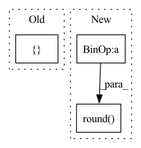

Pattern ID :21776
Before Change
scale_factor: Optional[float] = None
recompute_scale_factor: Optional[bool] = None
if fixed_size is not None:
size = [ fixed_size[1], fixed_size[0]After Change
else:
im_shape = torch.tensor(image.shape[-2:])
ratio = torch.min(new_shape[0] / im_shape[0], new_shape[1] / im_shape[1])
ratio_h = torch.round(im_shape[0] * ratio).to(dtype=torch.int32)
ratio_w = torch.round( im_shape[1] * ratio) .to(dtype=torch.int32)
if torchvision._is_tracing():
new_unpad = _tracing_item_onnx(ratio_h), _tracing_item_onnx(ratio_w)In pattern: SUPERPATTERN
Frequency: 4
Non-data size: 3
Instances Fragment ID: 69407939
Project Name: zhiqwang/yolov5-rt-stack
Commit Name: cd1a6ec7cda09de0dc92962a37ecb4f723a8dfeb
Time: 2022-02-03
Author: 92794867+q3394101@users.noreply.github.com
File Name: yolort/models/transform.py
M Class Name: AnonimousClass
N Class Name: AnonimousClass
M Method Name: _resize_image_and_masks(3)
N Method Name: _resize_image_and_masks(5)
M Parent Class:
N Parent Class:
M File Name: yolort/models/transform.py
N File Name: yolort/models/transform.py
M Start Line: 257
M End Line: 286
N Start Line: 67
N End Line: 77
Before Change
@staticmethod
def _partition_inds(n: int, num_parts: int):
m = n // num_parts
parts = [ mAfter Change
@staticmethod
def _partition_inds(n: int, num_parts: int):
return np.round( np.linspace(0, n, num_parts + 1, endpoint=True)) .astype(
np.int32
)
Fragment ID: 69407938
Project Name: allenai/allenact
Commit Name: 8f456ef9510093db75645c80821c92f9e21a5b72
Time: 2020-01-17
Author: jordis@allenai.org
File Name: experiments/object_nav_thor.py
M Class Name: ObjectNavThorExperimentConfig
N Class Name: ObjectNavThorExperimentConfig
M Method Name: _partition_inds(2)
N Method Name: _partition_inds(2)
M Parent Class: ExperimentConfig
N Parent Class: ExperimentConfig
M File Name: experiments/object_nav_thor.py
N File Name: experiments/object_nav_thor.py
M Start Line: 101
M End Line: 106
N Start Line: 104
N End Line: 106
Before Change
if not train_mode:
phns = undo_padding(phns, phn_lens)
stats = { "PER": wer_details_for_batch(ids, phns, seq)}
return loss, stats
return loss
After Change
ids, phns, phn_lens = targets
// add one for eos
abs_length = torch.round( phn_lens * phns.shape[1])
phns = append_eos_token(phns, length=abs_length, eos_index=params.eos)
rel_length = (abs_length + 1) / phns.shape[1]
loss = params.compute_cost(outputs, phns, length=rel_length)
Fragment ID: 69407943
Project Name: speechbrain/speechbrain
Commit Name: 8fe7e9194cc497aa28a3c29498afbf823e800b7d
Time: 2020-06-02
Author: jjery2243542@gmail.com
File Name: recipes/minimal_examples/neural_networks/ASR_seq2seq/example_asr_seq2seq_experiment.py
M Class Name: seq2seqBrain
N Class Name: seq2seqBrain
M Method Name: compute_objectives(4)
N Method Name: compute_objectives(4)
M Parent Class: sb.core.Brain
N Parent Class: sb.core.Brain
M File Name: recipes/minimal_examples/neural_networks/ASR_seq2seq/example_asr_seq2seq_experiment.py
N File Name: recipes/minimal_examples/neural_networks/ASR_seq2seq/example_asr_seq2seq_experiment.py
M Start Line: 48
M End Line: 61
N Start Line: 50
N End Line: 67
Before Change
// Handle quantiles
if not "quantiles" in kwargs:
quantiles = [ np.round(1 - interval_width, 1), interval_widthAfter Change
// Handle quantiles
if not "quantiles" in kwargs:
remainder = 1 - interval_width
quantiles = [np.round(remainder / 2, 1), np.round( 1 - (remainder / 2), 1) ]
// Run the NeuralProphet function
super(TorchProphet, self).__init__( Fragment ID: 69407947
Project Name: ourownstory/neural_prophet
Commit Name: f191ca59692eb17a545e33a0f6890a26402cd61a
Time: 2022-10-17
Author: karl.richter@tum.de
File Name: neuralprophet/TorchProphet.py
M Class Name: TorchProphet
N Class Name: TorchProphet
M Method Name: __init__(17)
N Method Name: __init__(17)
M Parent Class: NeuralProphet
N Parent Class: NeuralProphet
M File Name: neuralprophet/TorchProphet.py
N File Name: neuralprophet/TorchProphet.py
M Start Line: 90
M End Line: 90
N Start Line: 90
N End Line: 91